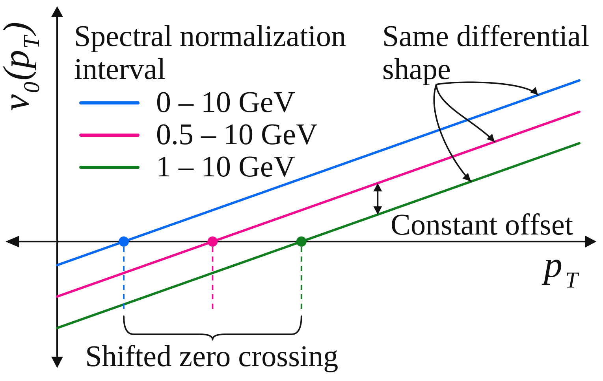

What Information Does Differential Radial Flow Carry?
Separating spectral-shape fluctuations from global multiplicity fluctuations
Overview
The differential radial-flow observable \(v_0(p_T)\) measures how fluctuations of the particle spectrum at a given transverse momentum correlate with event-by-event changes in the mean transverse momentum, \([p_T]\). Its momentum-dependent shape can provide information about collective radial expansion and the transport properties of the quark-gluon plasma (QGP). But the way a spectrum is normalized, or the way events are classified by activity, can also affect the numerical value of the observable.
This project addresses a central interpretational question: which features of \(v_0(p_T)\) reflect the underlying dynamics, and which depend on analysis conventions? Using analytical relations and HIJING simulations, we show that different spectral-normalization ranges and centrality estimators can produce a constant vertical offset in \(v_0(p_T)\) without changing its dependence on \(p_T\). The location where the curve crosses zero is therefore not an invariant measure of radial-flow dynamics. The robust information resides in its differential shape, or equivalently in its derivative with respect to \(p_T\).
Analysis
What does differential radial flow measure?
An event contains a transverse-momentum spectrum \(N(p_T)\), whose integral gives the total number of particles \(N\). We can separate its overall normalization from its momentum-dependent shape by writing
\[ N(p_T)=N\,n(p_T),\qquad \int n(p_T)\,dp_T=1. \]
The normalized spectrum \(n(p_T)\) describes how the particle yield is distributed in transverse momentum, while \(N\) describes the global multiplicity. A change in radial expansion typically changes the shape of the spectrum: stronger radial flow produces a flatter distribution and a larger event-wise mean \([p_T]\). The observable \(v_0(p_T)\) quantifies the correlation of local spectral fluctuations with those of \([p_T]\).
The distinction between normalization and shape is essential. In real analyses, particles are measured over finite momentum intervals, and multiplicity still fluctuates among events selected within the same centrality bin. An observed change in \(v_0(p_T)\) need not therefore imply a change in the underlying radial-flow response.
How global multiplicity creates an offset
For small correlated fluctuations, the spectrum can be decomposed to leading order as
\[ \delta N(p_T)\simeq \langle n(p_T)\rangle\,\delta N +\langle N\rangle\,\delta n(p_T). \]
The first term represents a global change in particle number, whereas the second captures a change in the normalized spectral shape. A differential observable constructed from the unnormalized spectrum \(N(p_T)\) therefore contains a multiplicity contribution in addition to the shape contribution measured from \(n(p_T)\).
The two definitions, denoted \(v_0'(p_T)\) and \(v_0(p_T)\), obey the approximate relation
\[ \Delta v_0\equiv v_0'(p_T)-v_0(p_T) \simeq \rho(N,[p_T])\frac{\sigma_N}{\langle N\rangle}, \]
where \(\rho(N,[p_T])\) is the correlation coefficient between multiplicity and mean transverse momentum, and \(\sigma_N\) is the standard deviation of \(N\). Crucially, the right-hand side is independent of \(p_T\). Residual volume or centrality fluctuations thus displace the entire curve rather than changing its shape. The relation is derived under the small-correction approximations appropriate to narrow event-activity selections.
The ambiguity introduced by a finite normalization range
Normalizing the spectrum does not completely remove the ambiguity, because the normalization itself depends on the accepted momentum interval. Define \(N_R=\int_R N(p_T)\,dp_T\) and \(n_R(p_T)=N(p_T)/N_R\) for a chosen range \(R\). Even at fixed total multiplicity, \(N_R\) can fluctuate as particles enter or leave the selected interval. Changing \(R\) therefore changes the residual multiplicity contribution to \(v_0(p_T)\).

This explains why a zero crossing near the ensemble mean \(p_T\) is not a unique dynamical scale: changing the normalization interval can move the crossing even when the same underlying spectral fluctuations are being studied.
Testing the argument with HIJING
We tested these relations in Pb+Pb events generated with HIJING, which provides a useful non-collective baseline rather than a hydrodynamic description of radial flow. The study varied the event-activity estimator, the momentum range used to normalize the spectrum, and the reference momentum interval used to define \([p_T]\). The correlations were constructed using separated subevents to reduce short-range biases and to test the expected multiplicity-dependent contributions.
The results support the analytical picture. Changing the event-activity definition causes substantial shifts for the observable constructed from the unnormalized spectrum; using the normalized spectrum or subtracting the predicted global-multiplicity contribution largely removes those shifts. Changing the spectral-normalization interval also displaces the curves, and the calculated correction brings them into close agreement. The corresponding comparisons are shown in the article’s results figures.
The reference-\(p_T\) dependence of the HIJING results additionally reveals non-flow contributions, especially at high \(p_T\). These effects should not be confused with the constant baseline ambiguity: they can alter the momentum-dependent behavior itself. HIJING is therefore used here to separate methodological and non-flow effects, not as evidence for collective expansion.
Why the zero crossing is not the physical observable
The measured \(v_0(p_T)\) may be negative at low momentum and positive at higher momentum, with a zero crossing between the two. That crossing is visually convenient, but its location depends on the vertical baseline. Since changing analysis conventions can modify the baseline without modifying the physical spectral-shape response, the crossing point alone is not a reliable dynamical scale.
Instead, a common additive offset cancels from any difference between two momentum points,
\[ \bigl[v_0(p_{T,1})+C\bigr]-\bigl[v_0(p_{T,2})+C\bigr] =v_0(p_{T,1})-v_0(p_{T,2}), \]
and from the derivative
\[ v_{0s}(p_T)\equiv\frac{d v_0(p_T)}{dp_T}. \]
These shape-sensitive quantities avoid the normalization ambiguity. The derivative is proposed as a useful alternative observable; the paper does not claim that the derivative has already been measured experimentally.
Implications for experimental comparisons
Different experiments use different detector acceptances, momentum cuts, spectrum-normalization conventions, and event-activity selections. Directly comparing the absolute positions or zero crossings of their \(v_0(p_T)\) curves can therefore be misleading. A meaningful comparison should first place the measurements on a common normalization convention or align their baselines, then compare their \(p_T\) dependence.
This distinction is especially important when using differential radial flow to constrain the QGP’s transport properties. A model that reproduces the slope and curvature but differs by an additive offset need not have an incorrect dynamical response. Conversely, agreement in the zero-crossing position alone does not establish agreement in the physical spectral-shape fluctuations.
My Contribution
I proposed the constant-offset interpretation of differential radial-flow curves obtained with different momentum ranges and analysis conventions. I also derived the analytical relations connecting global multiplicity fluctuations to the displacement of \(v_0(p_T)\), providing the basis for the paper’s interpretation and its HIJING-based validation. This work helped distinguish robust momentum-dependent physics from normalization-dependent features of the observable.
Connection to the ATLAS Radial-Flow Measurement
This study complements the ATLAS measurement that established long-range correlations, factorization, and a common differential response shape for radial flow in Pb+Pb collisions. The ATLAS work provides experimental evidence for collectivity; the present study explains how residual multiplicity fluctuations and normalization choices affect the interpretation of the differential observable. Together, they clarify what should be compared when using \(v_0(p_T)\) to study the collective medium.
Broader Implications
The broader lesson is that a differential observable can contain both dynamical information and an analysis-dependent baseline. Recognizing which features are invariant under changes of normalization makes comparisons between experiments and models more reliable. For radial flow, this focuses attention on the shape of \(v_0(p_T)\) as the part that can be used to study the medium’s response and, ultimately, constrain properties such as bulk viscosity.